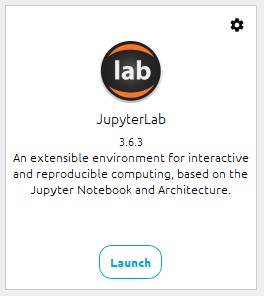

Requirements¶
In order to fully engage with the course material and complete the exercises, it is essential to have the necessary software installed on your system. Follow these step-by-step tutorials, to ensure you have the foundation to succeed in the course.
The required tools encompass:
Markdown
GitHub account
Git
Google Colab
Anaconda distribution
Visual Studio Code (optionally)
Markdown lightweight language¶
Markdown is a simple way to format documentation, readme files, and notes. Markdown simplifies text styling and organization.
Markdown knowledge is required for the program. While not covered in the course, it's vital for creating clear documentation. Please refer to the Markdown cheatsheet to learn the basics.
Github¶
GitHub is a platform that helps you colaborate and work on projects. It's like a digital space where people can store, share, and manage their code and project files.
GitHub allows you to create repositories (folders) to store your projects. Each repository contains all the files, code, and resources related to a specific project. It's a great place to keep track of your work and colaborate with others.
1. Create an account¶
To create a github account go to Github.com, and press Sign up.

Then follow the instructions on the site and finish creating your account.
Git¶
1. Installing Git¶
- Go to the git official website.
- Select the 64 bit standalone installer, and download the file. The file should be named like
Git-x.xx.x.x-64-bit.exe. - Select next in all the steps and finish the installation.
- Once is installed launch Git Bash an run the following command. You should see an output like this.
git --versionGit-2.41.0.3-64-bit.exe
Congratulations you have successfully installed Git in your computer.
2. Linking Git to your Github profile¶
- Launch Git Bash console.
- Add your user name and your email by running these commands
git config --global user.username "your-user-name" git config --global user.email "your_email@example.com"
Google colab¶
Google Colab is an online platform that allows you to write and execute Python code in a colaborative and interactive environment.
It's especially useful for data analysis, machine learning, and research projects. You can create and share notebooks that contain code, text, images, and more.
Gmail account
To use Google Colab, you need a Google account (such as a Gmail account). You can access Colab through a web browser without any installation. It provides a virtual machine with necessary libraries pre-installed, eliminating the need for local setup.
2.1 Create a new notebook¶
-
Create a New Notebook: Click here to create a new notebook and start coding.
-
Connect the Notebook: A new notebook will be created with an empty code cell. Make sure you connect the notebook to a running environment. You can start running the code once you have a machine assigned.

-
Adding Code: You can add code cells by clicking the "+ Code" button above the notebook or pressing the "+ Code" option in the "Insert" menu.
-
Adding Text: You can add text cells by clicking the "+ Text" button above the notebook or pressing the "+ Text" option in the "Insert" menu. Text cells allow you to add explanations, notes, and Markdown-formatted text.
-
Running Code: To run a code cell, click the play button ("Run") next to the cell, or press Shift + Enter. The output of the code will be displayed below the cell.
-
Saving and Renaming: Your notebook will be automatically saved to your Google Drive. To rename the notebook, click on the notebook name at the top-left corner and provide a new name.
-
Sharing and colaboration: You can share the notebook with others by clicking the "Share" button at the top-right corner. You can provide view or edit access, and others can colaborate in real-time.
-
Closing and Exiting: When you're done working on the notebook, you can close the browser tab or go to "File" > "Close" to close the notebook.
2.2 Access to a github repository¶
-
Open Google Colab: Go to the Google Colab website .
-
Choose GitHub Tab: Click on the "GitHub" tab on the "Welcome to Colaboratory" screen.
-
Enter Repository URL: In the "Enter a GitHub URL or search by organization or user" field, paste the URL of the GitHub repository that contains the notebook you want to open.
-
Search and Select Notebook: Google Colab will display a list of notebooks available in the repository. Search for the notebook you want to open and click on it.
-
Open the Notebook: The selected notebook will be opened in Google Colab. You can now view, edit, and run the notebook as needed.
-
Connect to a Runtime: If necessary, connect the notebook to a runtime by clicking the "Connect" button at the top-right corner of the notebook. This will allow you to run the code cells.
-
Run and Modify Code: You can now run code cells, modify the notebook, and work on the content as if it were a regular Google Colab notebook.
-
Save to Drive: Any changes you make to the notebook will be saved to your Google Drive.
Anaconda distribution¶
Anaconda is a platform that simplifies Python programming by providing tools and libraries for data science, analysis, and coding tasks.
You can follow the official instructions at Anaconda documentation.
-
Download Anaconda: go to the Anaconda website. Click on the "Download" for windows button.
-
Run Installer: locate the downloaded installer file (usually named something like "Anaconda3-2023.07-1-Windows-x86_64.exe") and double-click on it to run the installer.
-
Setup Wizard: follow the prompts in the setup wizard. You can leave most of the default settings as they are. However, make sure to check the box that says "Add Anaconda to my PATH environment variable." This will allow you to use Anaconda from the command line.
-
Install Anaconda: click the "Install" button to start the installation process. The installer will copy files to your computer.
-
Start Anaconda Navigator: after the installation, you can start Anaconda Navigator by clicking the "Next" button on the completion screen.
-
Launch Jupyter Lab: Open Anaconda Navigator, and launch Jupyter lab.

Congratulations! You've successfully installed Anaconda on your Windows computer.
VS Code (Optional)¶
Visual Studio Code is a free code editor developed by Microsoft. It's widely used for coding and programming tasks.
-
Download VS Code: go to the Visual Studio Code website. Click on the "Download for Windows" button.
-
Run Installer: locate the downloaded installer file (usually named something like "VSCodeSetup.exe") and double-click on it to run the installer.
-
Choose Additional Tasks: during the installation, you'll be prompted to choose additional tasks. You can choose to associate file types with VS Code, create a desktop icon, and more.
-
Start VS Code: after the installation, you can start Visual Studio Code by clicking the "Start" button on your Windows taskbar and searching for "Visual Studio Code" in the search bar. Click on the application to launch it.
-
Start Coding: you're now ready to start coding with Visual Studio Code. You can open files, create new projects, and install extensions to enhance your coding experience.
Congratulations! You've successfully installed Visual Studio Code on your Windows computer.